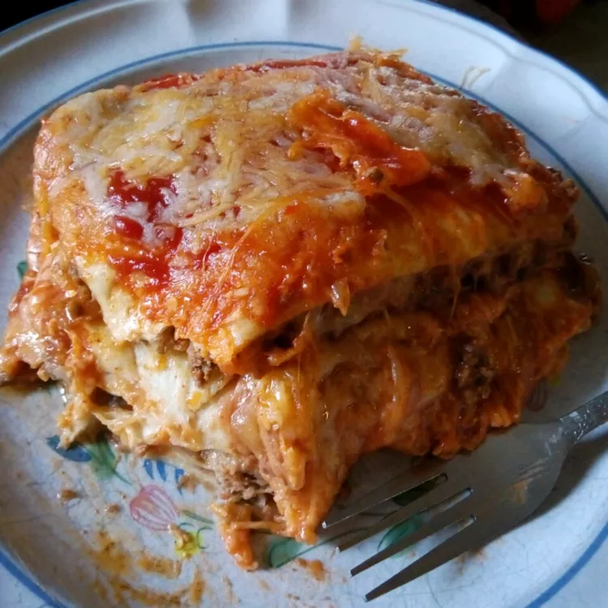

Lasagna Recipe

Lasagna
A delicious lasagna recipe to share with family and friends!
Ingredients
- 1 1/2 pounds ground Beef
- 1/4 cup Water
- 1 ounce packet Taco Seasoning mix
- 12 flour Tortillas
- 14 ounces can Refried Beans
- 3 cups shredded Colby-Jack Cheese
Steps
-
Preheat oven to 350 degrees F (175 degrees C). Grease a 9x13-inch
casserole dish.
-
Heat a large skillet over medium-high heat and stir in ground beef. Cook
and stir until beef is crumbly, evenly browned, and no longer pink,
about 10 minutes. Drain and discard any excess grease. Add water and
taco seasoning; cook and stir until mixture has thickened, 5 to 10
minutes.
-
Arrange 3 tortillas in the bottom of the casserole dish; spread about
half the can of refried beans and half the ground beef atop the tortilla
layer. Sprinkle 1 cup Colby-Jack cheese over ground beef layer. Arrange
3 more tortillas over the cheese. Spread in the remaining 1/2 can
refried beans and half the jar of taco sauce; sprinkle with 1 cup
Colby-Jack cheese. Arrange 3 more tortillas and top with remaining
ground beef and 1 cup Colby-Jack cheese. Top with last 3 tortillas and
remaining 1/2 jar taco sauce.
-
Bake in the preheated oven until top tortilla layer begins to brown, 20
to 25 minutes. Sprinkle 1 cup Colby-Jack cheese over lasagna.
- Turn on oven's broiler.
-
Place lasagna under the broiler until Colby-Jack cheese is melted and
bubbling, 3 to 5 minutes.
This recipe is from:
AllRecipes